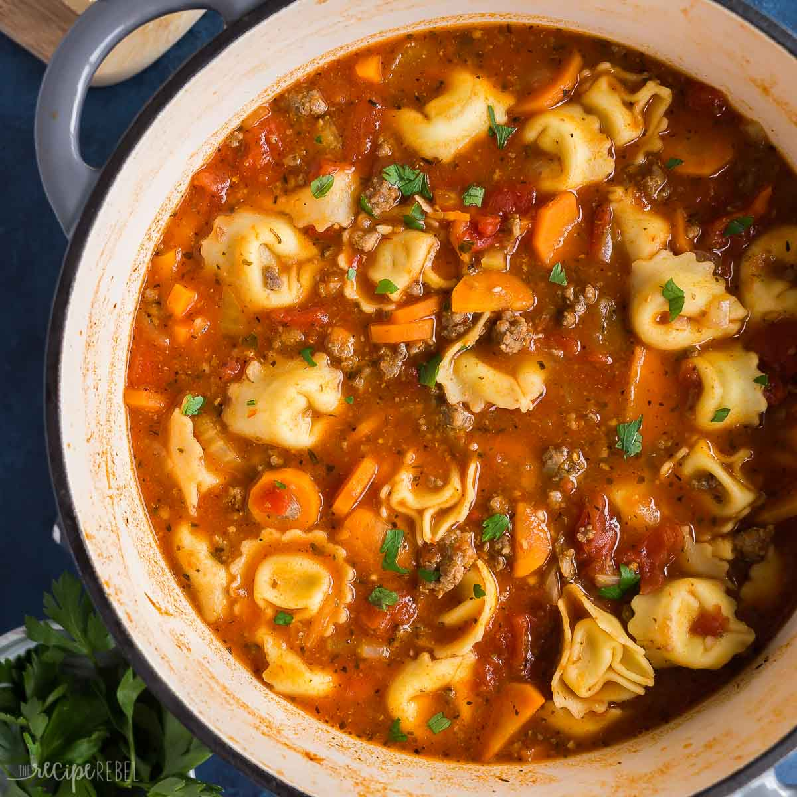

Go Back
How to Make Italian Sausage Soup with Tortellini

This tortellini soup with sausage embodies all the wonders of Italian cooking: Italian sausage, garlic, tomatoes,
and red wine. Serve with hot bread and salad for a delicious meal. Garnish each serving with Parmesan cheese.
Ingredients
- 1 pound sweet Italian sausage, casings removed
- 1 cup chopped onion
- 2 cloves garlic, minced
- 5 cups beef broth
- 4 large tomatoes - peeled, seeded and chopped
- 1 (8 ounce) can tomato sauce
- 1 cup thinly sliced carrots
- 1/2 cup water
- 1/2 cup red wine
- 1/2 tablespoon packed fresh basil leaves
- 1/2 teaspoon dried oregano
- 1 1/2 cups sliced zucchini
- 3 tablespoons chopped fresh parsley
- 8 ounces fresh tortellini pasta
Steps
- Cook sausage in a 5-quart Dutch oven over medium-high heat until browned and crumbly, 8 to 10 minutes. Use a
slotted spoon to transfer sausage to a paper towel-lined plate. Drain grease, reserving 1 tablespoon
drippings in the pot.
- Sauté onions and garlic in drippings over medium heat until onions are translucent, 3 to 4 minutes.
- Stir in beef broth, tomatoes, tomato sauce, carrots, water, wine, basil, oregano, and sausage. Bring to a
boil. Reduce heat; simmer uncovered for 30 minutes.
- Skim fat from soup. Stir in zucchini and parsley. Simmer covered for 30 minutes
- Add tortellini during the last 10 minutes.
- Serve hot and enjoy!